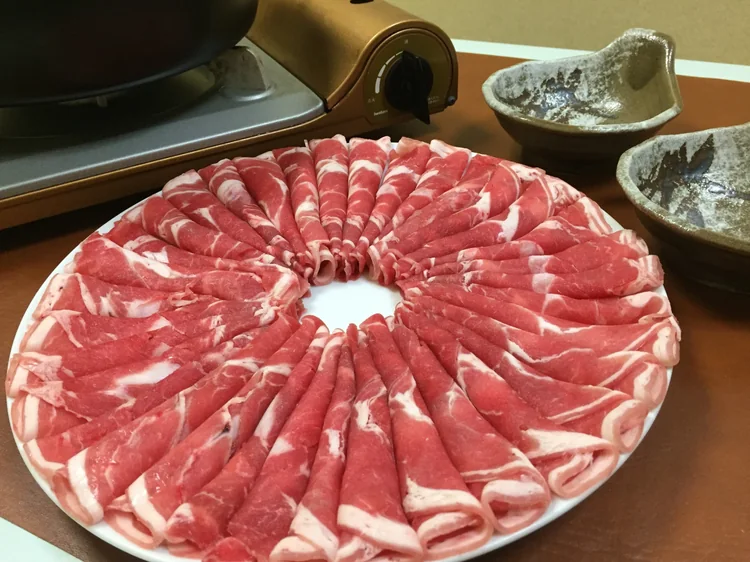
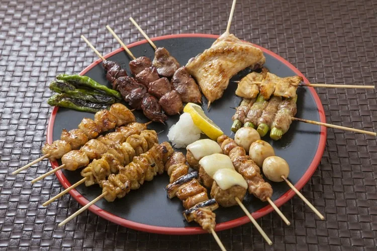
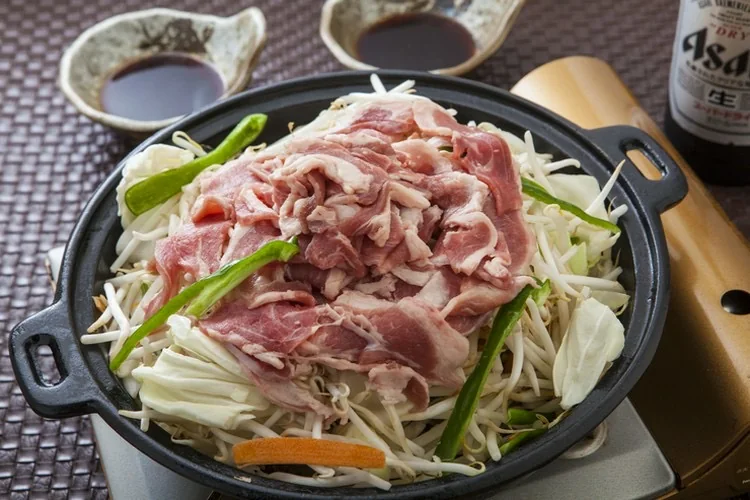
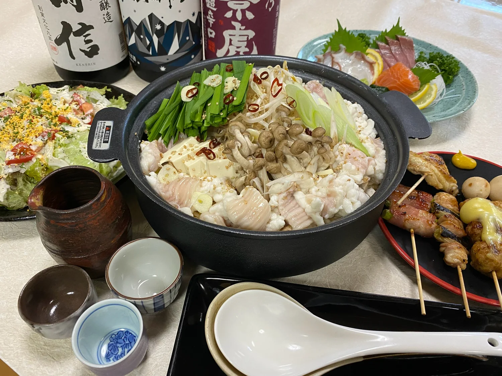

CUISINE & SAKE
お料理とお酒
北海道の味と、新潟の恵み。
今夜も、旨い一皿を。

FROM TWO HOMELANDS
一串から始まる、
三文銭の夜。
北海道出身の店主がつくる名物料理。
炭火で丁寧に焼き上げる焼き鳥。
北海道の味を、新潟のお酒とともにお楽しみください。

01 / MURORAN YAKITORI三文銭の名物
「焼き鳥」なのに、
豚肉。
室蘭焼き鳥
豚バラ肉と玉ねぎを串に刺し、甘辛いタレを絡めて香ばしく。北海道・室蘭で親しまれてきたご当地料理です。
北海道出身の店主だからこそ届けられる、本場の味。三文銭を訪れたら、まずはこの一串をどうぞ。
AT THE CHARCOAL GRILL
香りも、
ごちそう。
国産の食材を使い、一本一本、炭火で丁寧に。
香ばしさの中に、素材の旨みを閉じ込めます。
タレでも、塩でも、お好みで。
迷ったときは、店主おすすめの盛り合わせを。

02 / JINGISUKAN北海道の定番
熱々の鉄板を、
囲んで。
ジンギスカン
ラム肉とたっぷりの野菜を、焼きながら楽しむジンギスカン。直江津で味わえる、三文銭自慢の北海道料理です。
ご友人とのお食事にも、会社の仲間との飲み会にも。みんなで囲めば、会話も自然と弾みます。
ジンギスカンの宴会コースへHOKKAIDO MEETS NIIGATA
北海道の料理に、
新潟の一杯を。
ホッケなどの北海道料理から、上越で水揚げされた新鮮な魚介のお刺身まで。二つの土地の「旨い」を、新潟の地酒とともに。
その日のおすすめやお酒は、店内でお尋ねください。

RESERVATION